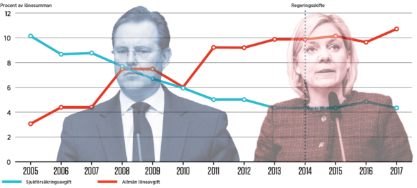

Regeringen plockar ut pengar ur sjukförsäkringen genom att sänka sjukförsäkringsavgiften samtidigt som de höjer den allmänna löneavgiften,
Under Alliansregeringen höjdes den allmänna löneavgiften i takt med att sjukförsäkringen urholkades och sjukförsäkringsavgiften sänktes. På så sätt kunde Anders Borg flytta över pengar från de sjuka till skattesänkningar åt de rika. Utvecklingen bröts 2014 när de rödgröna kom till makten. Men i årets budget har den rödgröna regeringen återigen tagit pengar från sjukförsäkringen genom att sänka sjukförsäkringsavgiften och höja den allmänna löneavgiften.

Den svenska sjukförsäkringen dras med stora problem, speciellt för LO-anslutna. Ändå plockar staten nu ut extra pengar ur sjukförsäkringen i stället för att tillföra de resurser som behövs.
Det sker genom att regeringen höjer den så kallade ”allmänna löneavgiften” samtidigt som de sänker sjukförsäkringsavgiften.
Det är ett knep som redan Anders Borg (M) tillämpade när han sparade på Sveriges sjuka och i stället sänkte skatterna. Men Socialdemokraterna bör ha högre ambitioner: att ge alla sjuka ekonomisk trygghet och rehabilitering.
Inte många lägger märke till de här förändringarna i budgeten eftersom den sammanlagda nivån på de sociala avgifterna inte har ändrats. Men avgifternas inbördes storlek har förändrats.
I de sociala avgifterna, som betalas in som en viss andel av lönesumman, ingår avgifter till flera försäkringar och områden, som föräldraförsäkringen, sjukförsäkringen och ålderspensionen.
Om kostnaderna för någon försäkring förändras så kan staten också förändra avgiften. Om till exempel sjukskrivningarna varaktigt minskar kan avgiften till sjukförsäkringen sänkas.
Så långt inga konstigheter.
Men bland dessa avgifter finns också något som heter ”allmän löneavgift”. Det är en avgift som inte är kopplad till någon speciell kostnad eller förmån i lagstiftningen och den är egentligen en skatt.
Regeringen kan alltså göra lite vad de vill med den, som att skapa jobb, eller bygga nya järnvägar och bostäder.
Nu till vad som hände med de sociala avgifterna under Anders Borgs tid som finansminister.
När Alliansregeringen styrde försämrades sjukförsäkringen kraftigt. Vi minns alla de enskilda människoöden med svårt cancersjuka som plötsligt ansågs kunna jobba då deras sjukersättning drogs in, och sjuka som hamnade mellan stolarna och varken fick sjukpenning eller a-kassa.
Stupstockar infördes där de sjuka helt sonika slängdes ut ur sjukförsäkringen.
De sjuka fick svälta eller leva på släktingar, men alltmer sällan fick de några pengar ur sjukförsäkringen. Och när de sjuka fick mindre pengar ur sjukförsäkringen kunde också sjukförsäkringsavgiften sänkas.
Det handlade om tiotals miljarder kronor som på detta sätt togs från de sjuka.
För Anders Borg återstod problemet hur han skulle styra om dessa sparade miljarder till det han och Alliansregeringen helst ville, nämligen att sänka skatterna.
Knepet blev att höja den allmänna löneavgiften i takt med att sjukförsäkringsavgiften sänktes (se diagram ovan).
Arbetsgivarna fick alltså fortsätta betala in lika hög arbetsgivaravgift, eller mer precist, löntagarna fick fortsätta avstå lika mycket av sin lön för att betala till de sociala avgifterna – men nu gick pengarna till att bekosta statens skattesänkningar.
På det sättet lyckades Anders Borg flytta de miljarder han sparade på alla nedskärningar i sjukförsäkringen till skattesänkningar.
Vi hade fått ett politiskt paradigmskifte, en nedmonterad sjukförsäkring där pengarna i stället gick till sänkta skatter för höginkomsttagare.
Vad har då hänt under den socialdemokratiskt ledda regeringen?
Jo, det började bra, stupstocken togs bort och några av samhällets mest utsatta, de långtidssjuka, behövde bara kämpa med sin sjukdom och inte längre dessutom ställas på bar backe och ruineras av staten som ville sänka eller ta bort deras ersättning.
Kraven ökade också på en bättre arbetsmiljö.
I övrigt har tyvärr inte mycket hänt.
Och när den rödgröna regeringen ålade Försäkringskassan att få ned sjukskrivningarna till 9 sjukskrivningsdagar per person och år ökade oron i många LO-led. Som ett eko från de borgerliga åren började medierna också skriva om sjuka som fick sina sjukskrivningar ogiltigförklarade av Försäkringskassan.
LO-TCO rättsskydd slog i somras larm om att Försäkringskassan tolkar lagen fel när det gäller att pröva arbetsförmågan vilket leder till att folk förlorar sin sjukpenning.
Regeringens krav på färre sjukdagar och lägre kostnader för sjukförsäkringarna riskerade att flyttas över på de sjuka. Vilket är precis vad som har hänt.
När Försäkringskassan anställde mer personal för att granska de sjukskrivna ökade avslagen på förlängd sjukskrivning med 70 procent på ett enda år 2016.
Och 2017 är vi nu framme vid när den rödgröna regeringen gör samma sak som Anders Borg när regeringen nu sänker sjukförsäkringsavgiften och höjer den allmänna löneavgiften så att de sparade pengarna kan användas till något annat. Visserligen i betydligt mindre omfattning, men tillvägagångssättet är detsamma.
Men om kostnaderna för sjukförsäkringen minskar är det väl inte fel att pengarna används till annat?
Förvisso, och de pengar som nu sparas in på sjukförsäkringen används inte till skattesänkningar som de gjorde på Anders Borgs tid. I stället används de till ny infrastruktur, nya jobb och liknande.
Men behövs de verkligen inte inom sjukförsäkringen?
I Socialdemokraternas valprogram för valet 2014 stod att målet för svensk sjukförsäkring måste vara att ingen ska behöva kompletterande sjukförsäkringar, att ersättningen ska höjas till 80 procent under hela sjukperioden, att taket i sjukförsäkringen bör höjas till först åtta sedan tio basbelopp och – det allra viktigaste – att sjukförsäkringen både ska ge ekonomisk trygghet och rehabilitering.
Vi är långt ifrån där ännu. Vi vet också att de som råkar mest illa ut så länge dessa punkter inte uppfylls är LO-anslutna arbetare.
Och eftersom dessa punkter inte har uppnåtts borde pengarna ha stannat inom sjukförsäkringssystemet för att klara de mål som finns kvar.